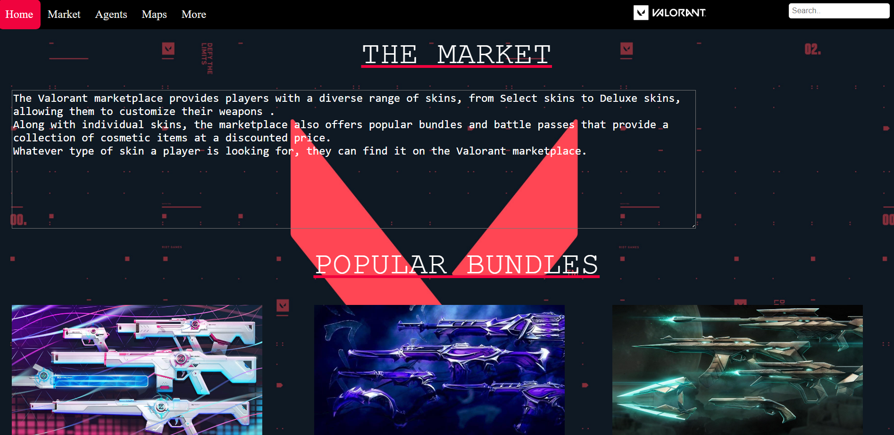
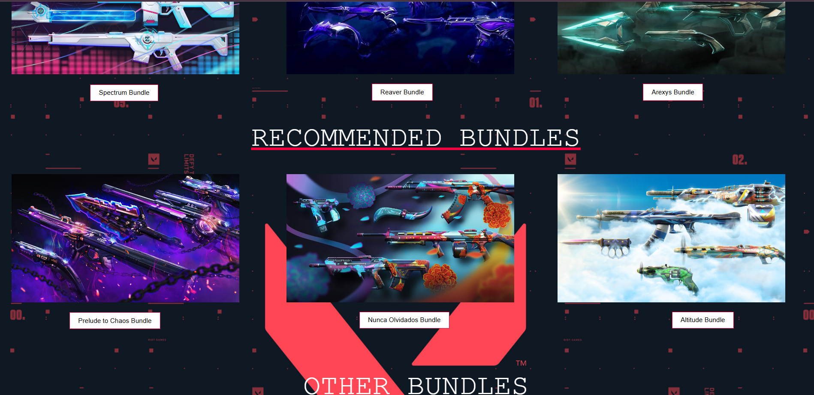
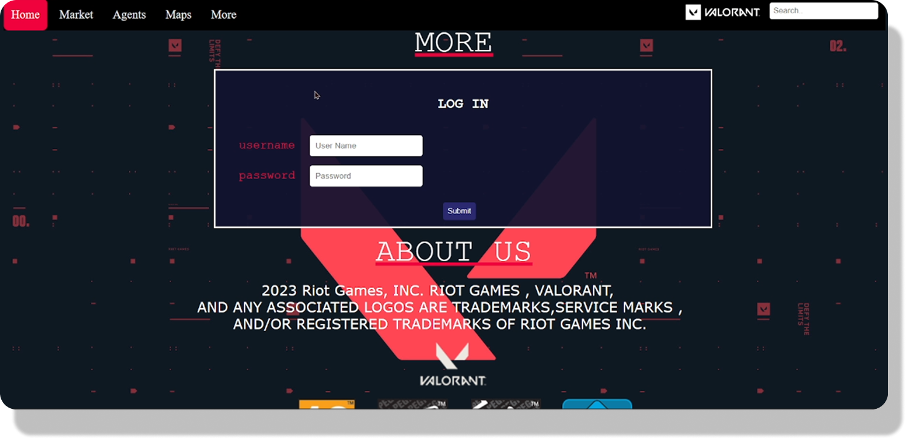
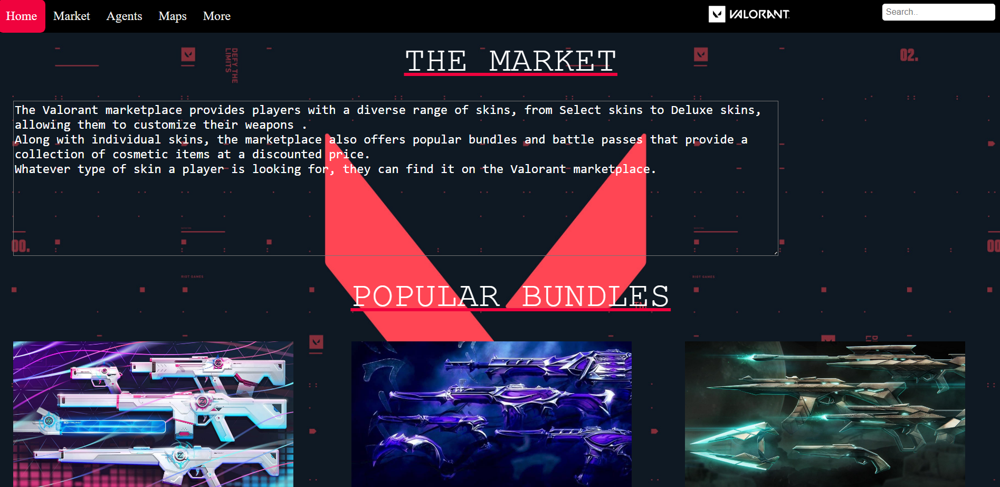
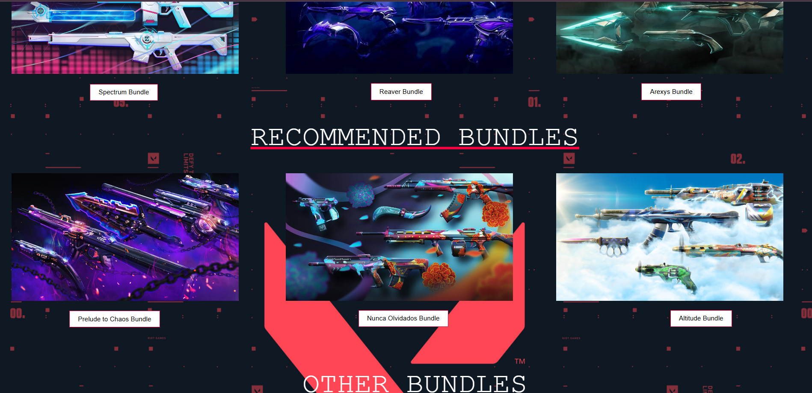
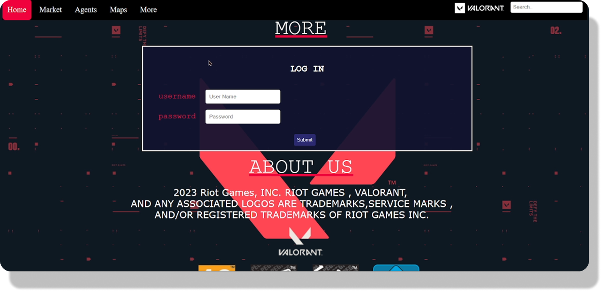
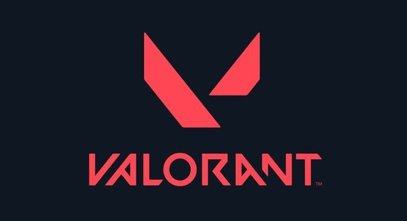
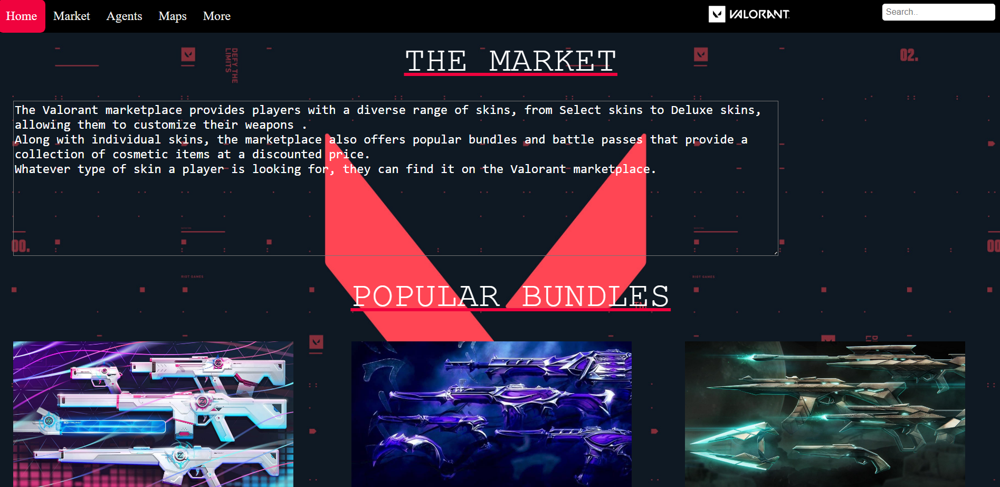
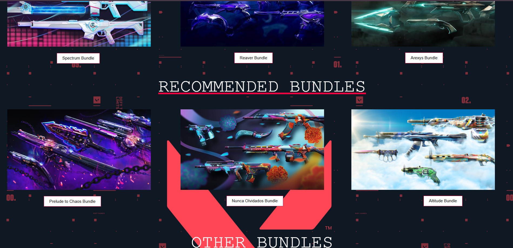
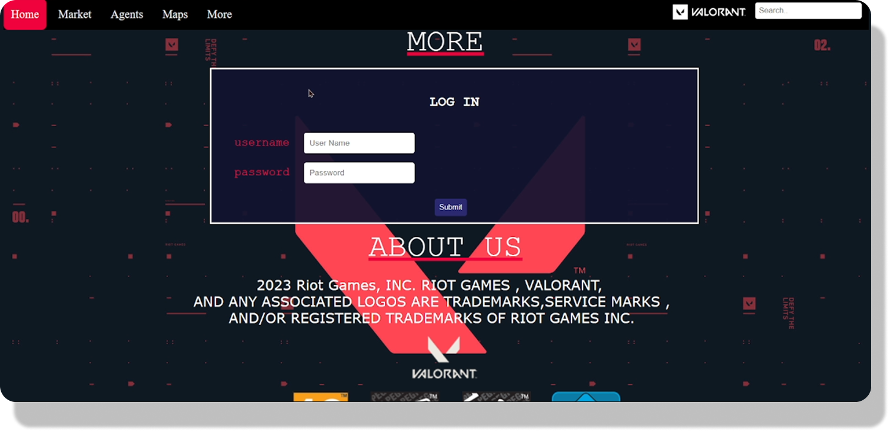

Website Images
 





Title: Valorant Redesign
Type: Website
Platform: Visual Studio Code
Languages: HTML, CSS, PHP, SQL

Website Description: Valorant Redesign is a project aimed at enhancing the user experience of the popular game Valorant. The project includes a complete overhaul of the website's layout, navigation, and visual elements to create a more cohesive and engaging user experience. By incorporating modern design principles and user feedback, the project seeks to create a more immersive and enjoyable online environment for Valorant players.
Key Features:
The primary goal of the Valorant Redesign project is to create a more user-friendly and visually appealing website that enhances the overall experience for Valorant players. By focusing on usability, aesthetics, and performance, the project aims to attract and retain users while providing them with a seamless online experience.


